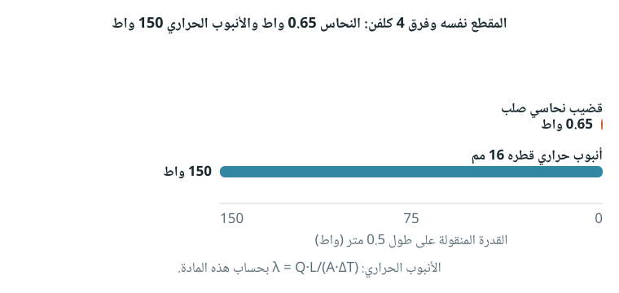

الأنبوب الحراري ينقل 150 واط بفرق أربع درجات عبر مقطع 16 مم
Heat pipe: effective conductivity and the capillary limit
الأنبوب الحراري ينقل الحرارة بتبخير سائل وتكاثفه لا بموصلية معدنه. أنبوب قطره 16 مم ينقل 150 واط بفرق 4 كلفن بين طرفيه، أي موصلية فعلية 93,255 واط/م·كلفن، ويقف سقفه العملي عند صعود شعري أقصاه 0.63 متر بمسام 20 ميكرومتر.
قضيب نحاسي صلب قطره 16 مم وطوله 0.5 متر ينقل عند فرق 4 كلفن بين طرفيه 0.65 واط فقط: المقطع الضيق مع الموصلية العالية (401 واط/م·كلفن للنحاس) لا يكفيان. الأنبوب الحراري بالقطر نفسه ينقل 150 واط في الظروف ذاتها، والفرق ليس في المعدن بل في طريقة النقل. داخل الأنبوب سائل يعمل بضغط أقل من الضغط الجوي: يتبخّر عند الطرف الساخن ويلتقط حرارة التبخّر الكامنة، ويسير البخار إلى الطرف البارد حيث يتكاثف ويسلّم الحرارة نفسها، وتعيد الشعيرة السائلة إلى الطرف الساخن. الحرارة تنتقل هنا مع الكتلة، لا عبر شبكة المعدن وحدها، فتصغر المقاومة الحرارية صغرًا لا يبلغه مقطع معدني من الحجم نفسه.
الحساب مبني على تعريف الموصلية الفعلية: مقطع 2.0106×10⁻⁴ متر مربع، قدرة 150 واط، طول 0.5 متر، وفرق 4 كلفن بين المبخّر والمكثّف، فتعطي 93,255 واط/م·كلفن — أي 233 ضعف موصلية النحاس. لكن الذي يوقف الأداء ليس المعدن بل قدرة الشعيرة على إعادة السائل: التوتر السطحي للماء عند 100 °م يعطي ضغطًا شعريًا 5,890 باسكال بمسام 20 ميكرومتر، أي عمود ماء أقصاه 0.63 متر، وهذا سقف الصعود ضد الجاذبية.
كيف تعمل الظاهرة؟
السلسلة السببية: حرارة تدخل جدار المبخّر فترفع حرارة السائل المشبَّع حتى يتبخّر؛ يتجمّع البخار في القلب ويسير إلى المكثّف بدفع فرق الضغط الصغير بين الطرفين؛ عند سطح المكثّف تُسحب الحرارة الكامنة فيتكاثف البخار سائلًا؛ ثم تعيد الشعيرة — شبكة معدنية مسامية أو أخاديد محفورة — السائل إلى المبخّر بضغط الشعرية. لأن التبخّر والتكاثف يقعان قرب درجة تشبّع واحدة، يبقى الطرفان متقاربين في الحرارة إلا بمقدار ما يقابل هبوط ضغط البخار. المقاومة الحرارية الكلية هي مجموع جدار المبخّر وجدار الشعيرة وجدار المكثّف، أما البخار في الوسط فمقاومته ضئيلة لأن النقل يحمله تدفق كتلي لا توصيل جزيئي.
العلاقة بالأرقام
λ_eff = Q·L/(A·ΔT). بالتعويض: 150 واط × 0.5 متر ÷ (2.0106×10⁻⁴ متر مربع × 4 كلفن) = 93,255 واط/م·كلفن، أي 233 ضعف نحاس عند 401. وللمقارنة بالمقطع نفسه: Q = k·A·ΔT/L = 401 × 2.0106×10⁻⁴ × 4 ÷ 0.5 = 0.65 واط. الحدّ الحركي: Δp = 2σ/r_p؛ وبـσ = 0.0589 نيوتن/م عند 100 °م ومسام 20 ميكرومتر يعطي 5,890 باسكال، والارتفاع المقابل h = 2σ/(ρ·g·r_p) بكثافة 958.4 كغ/م³ يساوي 0.63 متر. عند رفع 0.5 متر يبقى من الضغط الشعري 1,191 باسكال فقط لخسائر سريان السائل والبخار، وكل خسارة إضافية تُنقص القدرة أو ترفع فرق الحرارة.
مفاهيم متقاربة
الخلط الأول: الظنّ أن 93,255 واط/م·كلفن موصلية مادة كالنحاس؛ ليست كذلك، بل موصلية مكافئة تُحسب بقسمة القدرة على فرق الحرارة والمساحة والطول، وقيمتها تتبع الفرق المقيس: لو كان الفرق 2 كلفن لصارت 186,510. الخلط الثاني: الأنبوب الحراري ليس سيفونًا حراريًا (thermosyphon)؛ السيفون يعتمد على الجاذبية لإعادة السائل ولا شعيرة فيه فيعمل في اتجاه واحد، أما الشعيرة فترجّع السائل ضد الجاذبية. الخلط الثالث: صغر المقاومة الحرارية لا يعني قدرة غير محدودة؛ الذي يحكم هو حدود التشغيل لا فرق الحرارة وحده.
حدود التطبيق
الرقم صالح لظروف المثال: ماء، 100 °م، مسام 20 ميكرومتر، مقطع 16 مم، وفرق مقيس 4 كلفن. وخارجها تفشل في حدود معروفة: حدّ الشعيرة وهو الأكثر شيوعًا عند الصعود ضد الجاذبية أو الاستطالة أو الانحناء؛ وحدّ الغليان حين تتجاوز كثافة الحرارة ما يحتمله السائل في المبخّر فتغلف السطح ببخار عازل؛ وحدّ الصوت عند سرعات بخار عالية؛ وحمل الغاز غير القابل للتكاثف الذي يتراكم عند المكثّف فيقطع الطرف البارد تدريجيًّا. وخارج نطاق تشغيل السائل — تجمّد أو اقتراب من النقطة الحرجة — لا يعمل الأنبوب أصلًا، والوضع الأفقي يرفع السقف لأن الجاذبية تخرج من الموازنة.

| الكمية | القيمة | المصدر |
|---|---|---|
| الموصلية الحرارية للنحاس | 401 W/(m·K) | [3] |
| كثافة الماء السائل عند 100 °م | 958.4 kg/m³ | [2] |
| التوتر السطحي للماء عند 100 °م | 0.0589 N/m | [2] |
| الموصلية الفعلية المحسوبة لأنبوب حراري 16 مم عند 150 واط وفرق 4 كلفن | 93,255 W/(m·K) | [1] |
| أقصى ارتفاع شعري عند مسام 20 ميكرومتر (محسوب) | 0.63 m | [2] |
| القدرة المنقولة بقضيب نحاسي بالمقطع نفسه وفرق 4 كلفن (محسوبة) | 0.65 W | [3] |
المصادر
- 1 Heat Pipe Design Handbook: Volume I — NASA Technical Reports Server. ntrs.nasa.gov/citations/19810065690 · اطُّلع عليه 2026-11-27
- 2 NIST Chemistry WebBook, SRD 69 — Thermophysical Properties of Fluid Systems — NIST. webbook.nist.gov/chemistry/fluid/ · اطُّلع عليه 2026-11-27
- 3 Thermal Conductivity of Metals and Alloys — Engineering ToolBox. www.engineeringtoolbox.com/thermal-conductivity-metals-d_858.html · اطُّلع عليه 2026-11-27
راجعه: عبدالله الهويدي — مراجعة في تطبيق انفراد · 2026-11-27 · آخر تحديث 2026-11-27
رجوع إلى المقالات